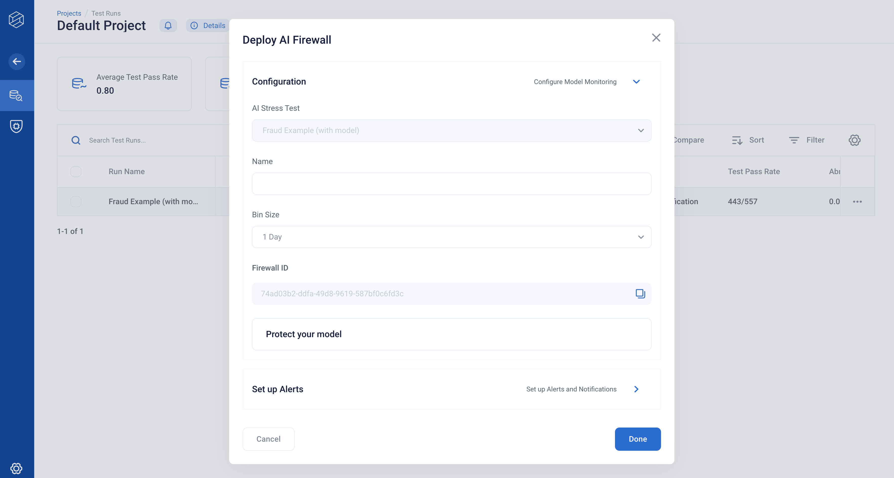

Protecting Your Model with AI Firewall
This guide will cover how to configure the AI Firewall to protect your model from “bad” input data in near-real time.
Similar to the AI Firewall Continuous Tests, AI Firewall for Realtime Events is automatically trained from an AI Stress Testing run.
In this walkthrough, we will be using the IEEE-CIS Fraud Detection dataset, which is available in the rime_trial/ bundle provided during installation.
Overview
AI Firewall Realtime can be easily instantiated from an existing AI Stress Testing Run. You can also view a simulation of real-time events by running AI Firewall Continuous Tests.
Run AI Stress Testing
Review and Download Auto-Configured AI Firewall Rules
Setup a Firewall Client in a Jupyter Notebook
Monitor Events
1. Run AI Stress Testing
The first step in setting up AI Firewall Realtime is running AI Stress Testing and configuring an AI Firewall for a given project. These steps are very similar to steps 1-3 of AI Firewall Continuous Tests.
rime-engine run-stress-tests --config-path examples/fraud/stress_tests_with_model.json
Next, click on “Deploy AI Firewall” and fill out the details. The step is the same as step 3 in the Firewall Continuous Tests tutorial. The AI Firewall you create can be used to monitor (Continuous Tests) or protect (Realtime Events) your model.
2. Review and Download Auto-Configured AI Firewall Rules
AI Firewall Realtime is configured from a JSON configuration file (rules.json).
This configuration is auto-generated based on the model and datasets that you provided
to run AI Stress Testing.
To view and download the JSON configuration file, click on “Protect your model”.
At this step, copy the Firewall ID and download the rules.json files — you will need them for later steps in this walkthrough.
Once downloaded, place rules.json in your rime_trial/ folder
3. Setup a Firewall Client in a Jupyter Notebook
Within the tutorial directory, we’ll want to open up a Jupyter notebook.
pip install notebook
pip install ipykernel
python -m ipykernel install --user --name=rime-venv
jupyter notebook
When creating a new notebook, be sure to use the rime-venv kernel as opposed
to the default Python 3 kernel!
Load Example Dataset and Model
Let’s add some helper preprocessing code to the notebook. Remember to make sure that you create the notebook in your rime_trial folder!
import catboost as catb
import pickle
import pandas as pd
import os
RIME_PATH = os.path.abspath('.')
model = catb.CatBoostClassifier()
model.load_model(str(RIME_PATH + "/examples/fraud/fraud.catb"))
with open(RIME_PATH + "/examples/fraud/null_impute.pkl", "rb") as f:
null_impute = pickle.load(f)
def preprocess(x: dict):
"""Null impute categoricals."""
for col_name in x.keys():
if pd.isnull(x[col_name]) and col_name in null_impute.keys():
x[col_name] = null_impute[col_name]
return x
We now define the inference function (predict_dict):
# We now define our interface.
def predict_dict(x: dict):
"""Predict dict function."""
new_x = preprocess(x)
new_x = pd.DataFrame(new_x, index=[0])
return model.predict_proba(new_x)[0][1]
Now we are ready to run the Firewall in a real-time setting!
Running the AI Firewall Realtime with Sample Datapoints
Let’s first import the Firewall Realtime package:
from rime.tabular.firewall.base import TabularFirewall
from rime.tabular.firewall.uploader import FirewallUploader
from rime.core.client.firewall_client import FirewallClient
from rime.tabular import ModelTask
Let’s then instantiate a firewall object:
firewall_id = "$YOUR_FIREWALL_ID"
firewall_url = "localhost:5002"
upload_client = FirewallUploader.from_url(
firewall_id,
firewall_url,
)
fw_client = FirewallClient.from_cli_args(firewall_url)
firewall = TabularFirewall.from_components(
firewall_id=firewall_id,
json_file="rules.json",
predict_dict=predict_dict,
model_task=ModelTask.BINARY_CLASSIFICATION,
upload_client=upload_client,
firewall_client=fw_client
)
Your Firewall ID can be found by clicking the Settings toggle in the right-hand side of the Firewall homepage.
4. Monitor Events
Finally, let’s try to pass in a sample datapoint!
test_df = pd.read_csv('examples/fraud/val.csv')
label_col = "isFraud"
test_df = test_df.drop(label_col, axis=1)
datapoint = test_df.iloc[0].to_dict()
The firewall surfaces a graph of “flagged” events. Datapoints that do not raise errors will not be logged in the UI. For this specific datapoint, let’s introduce a data corruption:
datapoint['Count_1'] = 100000
Now let’s run the firewall over this datapoint.
firewall_response = firewall.validate_single_and_upload(datapoint)
If you take a look at firewall_response.summary.action you’ll find that the Firewall has flagged the datapoint.
Once you have deployed your firewall, and input data are starting to roll in, the AI Firewall will evaluate each and every data point, and output a decision: flag, pass, impute, or block based on the rules criteria.
NOTE: Only non-passing datapoints will be shown in the UI. That way, you are only alerted on problematic datapoints.
Configuring Firewall Behavior
By default, the AI Firewall will “flag” a problematic datapoint, unless it is determined that the datapoint could raise errors (in which case it will “block”). This behavior is configurable.
Below, we will use the rime Python Library to enable “block” behavior for the “Numeric Outliers” rule.
from rime.tabular.schema import FirewallAction
from rime.tabular.data_tests.schema.type import DataTestType
firewall.set_flagged_action_for_rule(DataTestType.NUM_OUTLIER, FirewallAction.BLOCK)
We can then test this with the current datapoint.
datapoint = datapoint.copy()
del datapoint["addr1"]
firewall.validate_single_and_upload(datapoint)
If you navigate back to the “Realtime Events” tab on AI Firewall, you will see a new datapoint that has been blocked by the Firewall.
For more information on configuring the Firewall, check out the AI Firewall Reference.
Troubleshooting
If you run into issues, please refer to our Troubleshooting page for help! Additionally, your RI representative will be happy to assist — feel free to reach out!